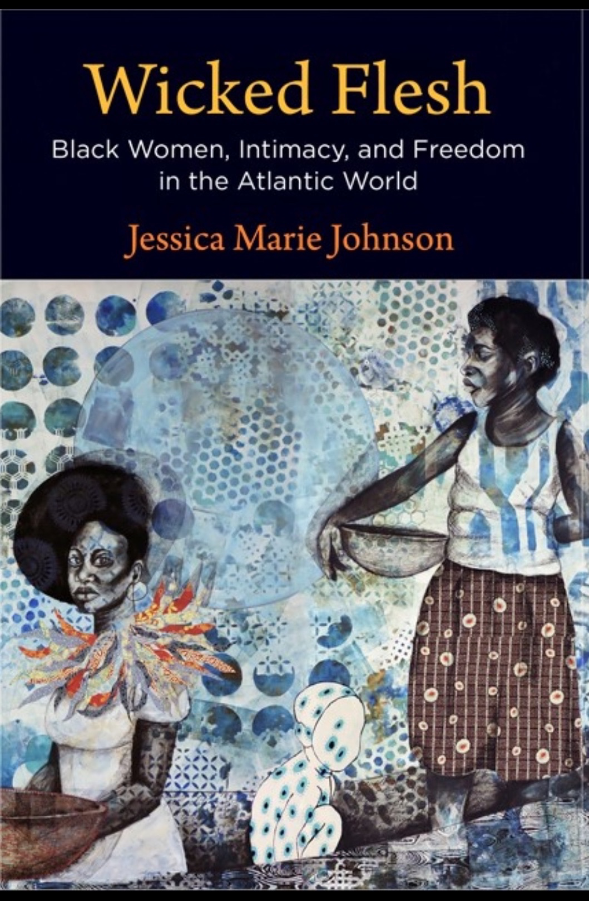

Johnson is a historian of Atlantic slavery and the Atlantic African diaspora.
As a historian and Black Studies scholar, Johnson researches black diasporic freedom struggles from slavery to emancipation.
She is the author of Wicked Flesh: Black Women, Intimacy, and Freedom in the Atlantic World (University of Pennsylvania Press, August 2020).
She is co-editor with Lauren Tilton and David Mimno of Debates in the Digital Humanities: Computational Humanities (2024).
She is the Director of LifexCode: Digital Humanities Against Enclosure.
Johnson is on IG as: @jmjafrx_ and Bluesky as @jmjafrx.